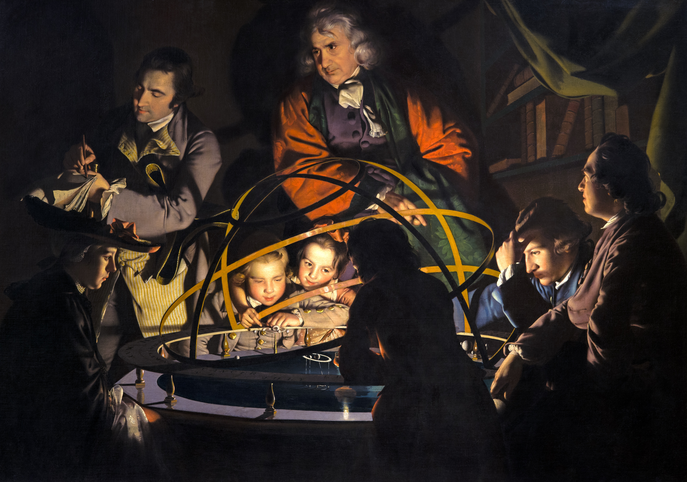
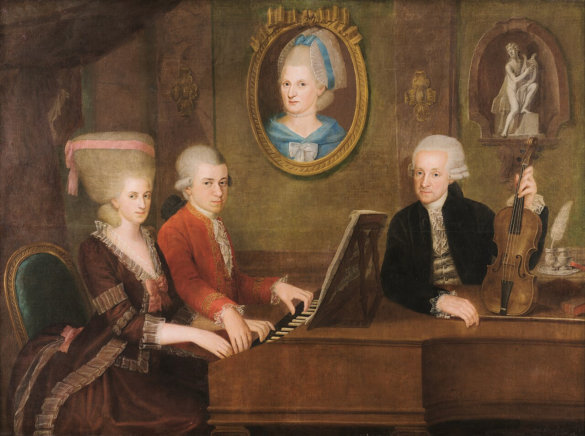
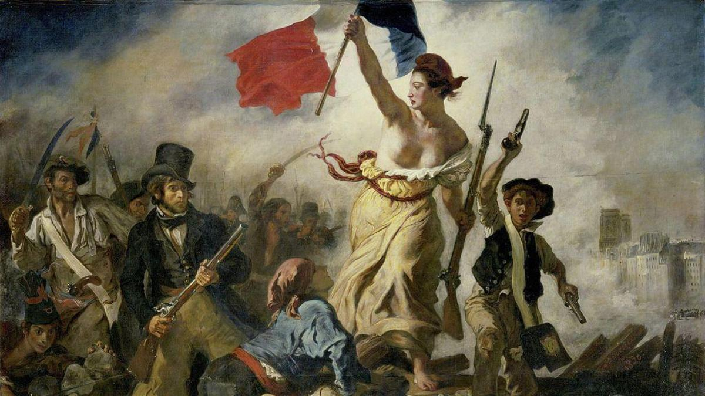
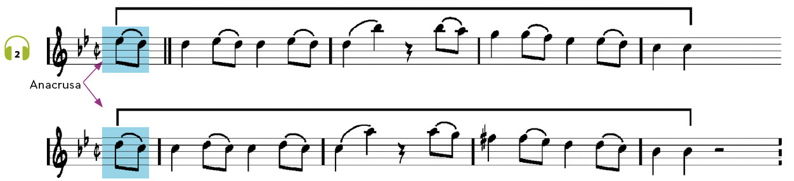

Contexto histórico
El Clasicismo (1750-1820) fue una época de grandes cambios:
- La Ilustración: movimiento que defendía la razón y la libertad, lo que impulsó la Revolución Francesa.
- La economía cambió con la Revolución Industrial y la burguesía (la nueva clase media rica) ganó mucha importancia frente a los nobles, mientras que la religión perdió control sobre la sociedad.
- En el arte se buscó la belleza basándose en la antigua Grecia y Roma, y en la música se abandonaron las exageraciones anteriores para crear obras claras, ordenadas y simétricas; además, los músicos empezaron a ser independientes y a tocar en teatros públicos para todo el mundo, no solo para los reyes o la Iglesia.
|
El estilo musical clásico es aquel que se desarrolló en la segunda mitad del siglo XVIII en torno a la obra de tres grandes compositores: Haydn, Mozart y Beethoven. No debes confundir este estilo musical con la expresión música clásica, que se utiliza de manera genérica para diferenciar la música culta de la música popular. |
 |
 |
 |
Para entender el cambio entre Barroco y Clasicismo escucha estas dos obras y responde a las siguientes preguntas:
🎧 Audición 1
- ¿En cuál te resultaría más fácil cantar la melodía?
- ¿En cuál de las dos percibes mayor sencillez y equilibrio?
La música del Clasicismo destaca por su proporción, equilibrio y simetría. Observa y escucha de nuevo el ejemplo de música del Clasicismo de la actividad anterior: se trata del primer movimiento de la Sinfonía n.º 40 en sol menor, de Mozart, cuya melodía probablemente te resultará conocida.

Observa en la partitura que la melodía anterior está dividida en dos semifrases simétricas: 4 + 4 compases. El ritmo de las dos semifrases es idéntico; pero la simetría de la música clásica no solo es melódica y rítmica, sino que también se da en la armonía. Por tanto, podemos resumir de la siguiente manera las características musicales del Clasicismo:
- Equilibrio, proporción y simetría de sus elementos musicales: ritmo, melodía, armonía, etc.
- La melodía se vuelve más comprensible y se memoriza mejor, al estar estructurada de manera más equilibrada. Podríamos decir que se da una pregunta-respuesta melódica con el mismo número de compases.
- La armonía se vuelve más sencilla y la textura predominante es la melodía acompañada.
¿Qué vamos a aprender?
4. Música del clasicismo
4.1 - Música vocal religiosa
4.2 - Música vocal profana
4.3 - Música instrumental
4.4 - Instrumentos del Clasicismo.